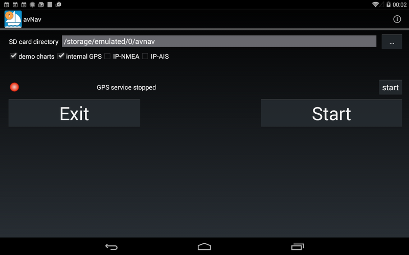
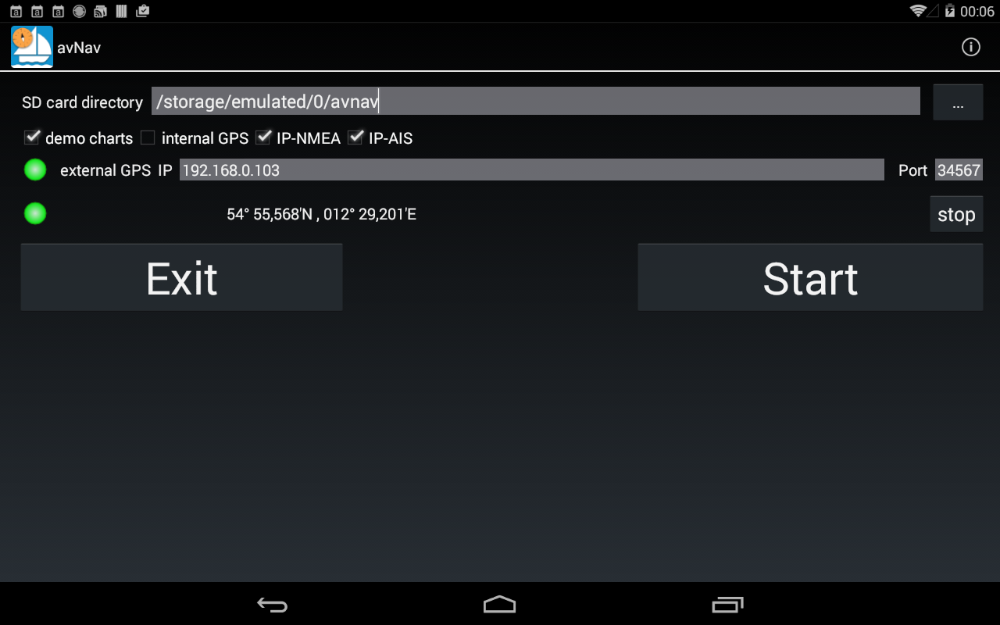
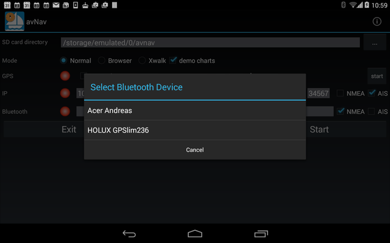
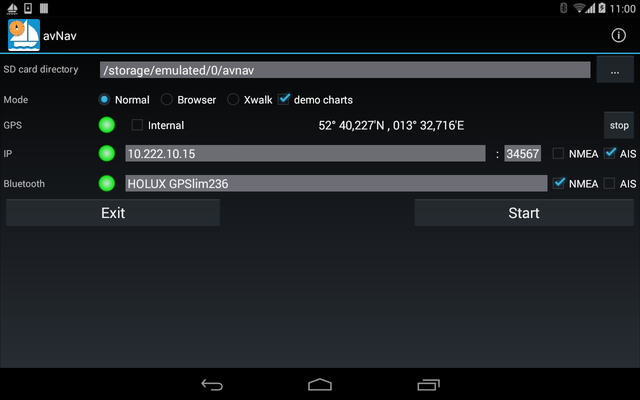
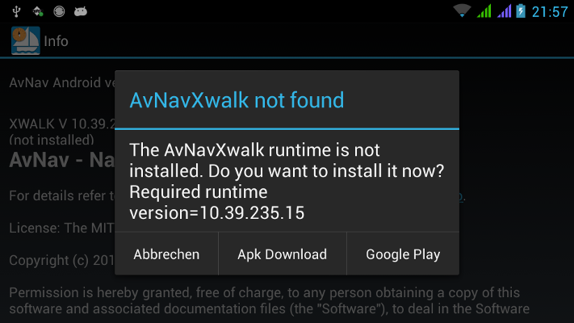
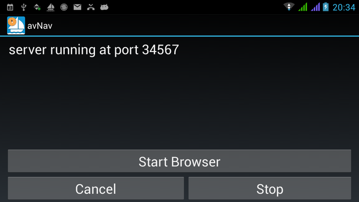
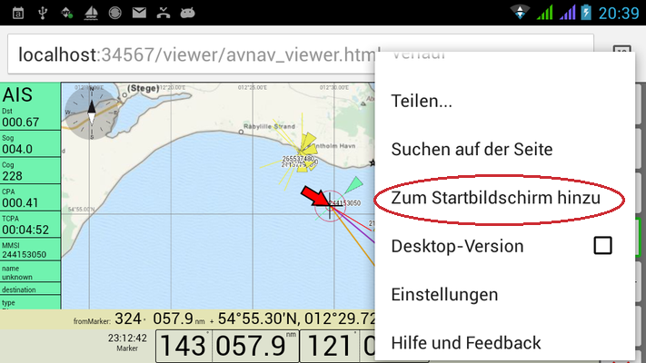
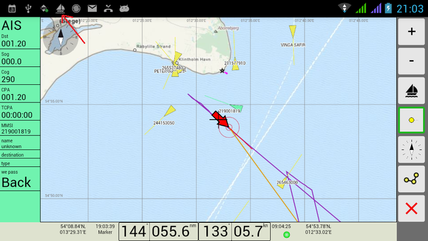

AvNav Android
Version 0.2.0.
Nachdem die Navigations-App für die Nutzung
mit dem Raspberry Pi bereits 2 Jahre erfolgreich im Einsatz
ist, gibt es jetzt auch eine erste Version, die direkt (ohne einen
Raspberry) auf Android läuft.
Zum Download. Oder im AppStore.
Sie verpackt im Wesentlichen die Web-App (siehe Beschreibung)
in eine Android Applikation - siehe dort auch zum Erzeugen/Konvertieren
der Karten.
Es kann das interne GPS des Gerätes genutzt werden. Alternativ können
NMEA Daten über TCP/IP oder bluetooth empfangen werden (RMC für die
Positionsdaten und AIS Daten). Die Quelle dafür kann z.B. ein Raspberry
mit meiner Software sein - aber auch ein beliebiger anderer Sender, der
die NMEA Daten per WLAN bereitstellt. Auch eine einfache GPS bluetooth
"Maus" ist geeignet.
Damit kann die Software auch auf Tablets ohne eingebautes GPS laufen.
Die Karten werden im gleichen gemf Format erwartet und müssen in das
avnav/charts Verzeichnis auf der SD-Karte kopiert werden (Verzeichnis kann
beim Start ausgewählt werden). Zusätzlich sind einige Demo-Karten
vorhanden, die allerdings eine Online-Verbindung erfordern.
Wenn das Verzeichnis avnav noch nicht da ist, wird es beim ersten Start
angelegt.
Die Track-Daten werden in das Verzeichnis avnav/tracks auf der SD-Karte
geschrieben.
Im Verzeichnis avnav/routes werden die Routen im gpx Format gespeichert.
Routen und Tracks können aus der App über die Download Funktion an andere
Apps weitergegeben werden (siehe Beschreibung der App). Um sie in andere
Verzeichnisse zu speichern oder Routen aus anderen Verzeichnissen zu laden
(upload Funktion) sollte sinnvollerweise ein Dateimanager installiert sein
- z.B. ES
Datei Manager.
Nach dem Start der App befindet man sich auf der Konfigurationsseite:

Hier kann das Verzeichnis auf der SD-Karte für Karten und Tracks gewählt
werden, sowie die Quelle für die Positionsdaten.
Durch einen Klick auf den kleinen Start-Button wird das GPS gestartet (bzw.
die IP Verbindung) und man kann prüfen, ob eine Position empfangen wird.
Wichtig:
Bitte die Applikation immer über diese Seite und den Exit Button verlassen
- sonst laufen der Positions-Empfang und die Track-Aufzeichnung weiter
(und das belastet den Akku).
Wenn die Trackaufzeichnung läuft wird das über ein kleines Boot in der
Navigation angezeigt.
Ein Klick auf den großen Start-Button unten startet die AvNav Web-App -
genauso wie sonst im Browser.
Ein Klick auf den (i) Button zeigt die Version der Applikation sowie
Lizenz-Daten an.
Falls NMEA Daten über AIS (oder Bluetooth) empfangen werden sollen, müssen
die Checkboxen entsprechend aktiviert werden.
Im dann sichtbaren Feld müssen - für IP - IP-Adresse und Port des NMEA
Senders eingetragen werden:

Im Bild ist die IP Verbindung erfolgreich aufgebaut (unterer gründer Punkt)
und es wird eine gültige Position empfangen (oberer grüner Punkt).
Zum Testen kann man über den kleinen Start/Stop Button die Verbindung
prüfen.
Wenn beide Punkte grün sind, über den großen Start-Button die Applikation
starten.
Zum Verbinden mit einem Bluetooth GPS, dieses zunächst über die Bluetooth
Einstellungen (ausserhalb der Applikation) "pairen".
In der App dann NMEA oder AIS bei Bluetooth auswählen und auf das sichtbare
Eingabefeld tippen, es erscheint ein Auswahldialog für verbundene Bluetooth
Geräte:

Mit dem Auswählen eines Gerätes wird der Name in der Bluetooth Zeile
sichtbar. Falls Bluetooth nicht aktiv ist, wird gefragt, ob es eingeschaltet
werden soll.

Im Bild ist der Positionsempfang über Bluetooth aktiv, AIS Daten werden über
IP empfangen.
Leider ist in älteren Android Versionen (< 4.4) Bluetooth manchmal
ziemlich fehlerbehaftet. Wenn sich partout keine Verbindung ergeben will
(Anzeigen bleiben auf gelb, status searchin Sat 0/0) hilft oft ein Neustart
des Tablets.
Auf Nexus Geräten scheint das besser zu funktionieren als auf einigen
anderen.
Auf dieser Seite kann auch der Modus ausgewählt werden:
Ab Android 4.4 (Kitkat) läuft die App problemlos ohne weitere
Installationen. In Versionen ab 4.0 (in älteren läuft sie nicht) ist sie im
Normalmodus meist kaum bedienbar. Das liegt an dem recht fehlerhaften
Browser unter Android.
Dafür gibt es zwei Lösungsmöglichkeiten:
Die "Crosswalk" runtime installieren.
Das ist eine embedded Chrome runtime (d.h. ein Stückchen Chrome läuft in der
App) - damit wird der Stand für den embedded Browser auf Android 4.4 angehoben.
Die runtime muss allerdings in der Version genau passen (die AvNavApp prüft
das und zeigt das auf der Info-Seite (i) an). Diese kann man entweder von
der Download-Seite oder aus dem AppStore
herunterladen. In jedem Falle auf die Versionsnummer und die Architektur
achten (dürfte meist ARM sein).
Wenn die App das erste mal gestartet wird, prüft sie, ob eine solche runtime
installiert ist und bietet sonst an, das zu tun.

Hier gibt es 2 Möglichkeiten:
GooglePlay - das installiert die neueste Version der runtime. Wenn man die
App auch auf der neuesten Version hat, sollte das funktionieren.
Sonst die Möglichkeit ApkDownload auswählen (das geht zur passenden Version
auf der download Seite) . Dann sollte im
Normalfall ein Browser zum Download gestartet werden. Zum Installieren muss
dann allerdings unter Sicherheit die "Installation aus unbekannten Quellen"
erlaubt werden.
Wenn die Runtime erfolgreich installiert wurde, den Mode "Crosswalk"
auswählen. Das ist auf jeden Fall von der Performance die beste Variante.
Wenn die Runtime App nicht installiert ist, ist der Button nicht zu sehen.
Chrome Browser installieren
https://play.google.com/store/apps/details?id=com.android.chrome
Dann auf dem Bildschirm den Mode "Browser" auswählen (siehe) unten - ist
von der Bedienung beim Start etwas umständlicher.
Im Browser Mode startet die App einen kleinen Webserver (also spielt so ein
wenig Raspberry...) auf einem festen Port (34567) und zeigt die folgende
Seite an:

Durch einen Klick auf Start Browser wird eine Auswahl der installierten
Browser angezeigt, hier Chrome auswählen.
Leider hat man dann im Browser immer die Adressleiste, die etwas Platz
wegnimmt. Um das zu verhindern, kann man in Chrome im Einstellungsmenü "Zum
Startbildschirm hinzufügen" einstellen, dann noch einen sinnvollen Namen
vergeben (im Moment gibt es noch kein schönes icon, das kommt noch...).

Danach über den Home Button hier den Chrome Browser verlassen und auf dem
Startbildschirm auf das neue Icon klicken.
Das sieht dann wieder gut aus:

Zum Beenden oben (roter Pfeil) über die Notifikation gehen (kleines
Segelboot), darüber kommt man wieder in die App und kann sie über die
Startseite verlassen.
Sonst laufen der GPS Empfang und das Trackschreiben im Hintergrund weiter.
Beim nächsten Start nur die App im Browser Mode starten, dann direkt über
den Home Button zum Startbildschirm und den Browser über das abgelegte Icon
dort starten.
Aus der App kommt man mittels "Zurück" Button immer auf die Startseite und
kann sie geordnet verlassen (das schreibt auch die Track-Daten noch einmal
in eine Datei).
Wenn die App läuft werden die Track-Daten alle 10 Minuten in eine Datei
geschrieben.
Wichtiger Hinweis:
Wenn man im Browser-Mode mal direkt aus der App und mal vom Home Bildschirm
startet, hat man jedesmal andere Einstellungen in der App.
Also bitte immer den gleichen Weg benutzen.